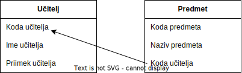

Licenca
To delo je na voljo pod pogoji slovenske licence Creative Commons 2.5:
priznanje avtorstva - nekomercialno - deljenje pod enakimi pogoji.
Celotna licenca je na voljo na spletu na naslovu http://creativecommons.org/licenses/by-nc-sa/2.5/si/. V skladu s to licenco je dovoljeno vsakemu uporabniku delo razmnoževati, distribuirati, javno priobčevati, dajati v najem in tudi predelovati, vendar samo v nekomercialne namene in ob pogoju, da navede avtorja oziroma avtorje in izdajatelja tega dela. Če uporabnik delo predela, kar pomeni, da ga spremeni, preoblikuje, prevede ali uporabi to delo v svojem delu, lahko predelavo dela ponudi na voljo le pod pogoji, ki so enaki pogojem iz te licence oziroma pod enako licenco.

Relacijski podatkovni model
Tuji ključ
Kot že vemo, v relacijskem podatkovnem modelu ustvarimo relacijo med dvema tabelama tako, da obema tabelama dodamo skupno polje. To skupno polje mora biti primarni ključ ene tabele, v drugi tabeli pa to isto polje predstavlja tuji ključ. Z drugimi besedami, primarni ključ prve tabele, predstavlja tuji ključ v drugi tabeli oziroma tuji ključ kaže na primarni ključ prve tabele.
Oglejmo si, kako so na primer povezani učitelji in predmeti, ki jih učitelji poučujejo. V tabeli predmetov vsak zapis posameznega predmeta vsebuje tudi polje s »Kodo učitelja«, ki poučuje ta predmet. To polje predstavlja tuji ključ, saj kaže na polje oziroma je povezano s poljem »Koda učitelja« v tabeli učiteljev, kot prikazuje spodnja slika:

Tuji ključi omogočajo nekaj, kar imenujemo referenčna celovitost (ang. referential integrity). To pomeni, da če tuji ključ vsebuje vrednost, se ta vrednost nanaša na obstoječi zapis (in njegov primarni ključ) v povezani tabeli. Oglejmo si na primer spodnji tabeli:
ucitelj
| koda | ime | priimek |
|---|---|---|
| 1 | Vilko | Kovačič |
| 2 | Zvone | Zupančič |
| 3 | Hilda | Mlakar |
predmet
| koda | naziv | koda_ucitelja |
|---|---|---|
| 1 | Matematika | 1 |
| 2 | Fizika | 3 |
| 3 | Geografija | 2 |
Med tabelama obstaja referenčna celovitost, saj vsi učitelji (oziroma njihove kode) v tabeli predmetov, obstajajo v tabeli učiteljev.
Poglejmo, kaj se zgodi v primeru, da učitelj Vilko Kovačič zapusti šolo in ga zato odstranimo iz tabele učiteljev. V primeru, da referenčna celovitost ni zahtevana in uveljavljena, bi se zgodilo, da bi učitelja odstranili iz tabele učiteljev, ne pa tudi iz tabele predmetov, kjer bi še vedno ostala njegova koda, kot je prikazano spodaj:
ucitelj
| koda | ime | priimek |
|---|---|---|
| 2 | Zvone | Zupančič |
| 3 | Hilda | Mlakar |
predmet
| koda | naziv | koda_ucitelja |
|---|---|---|
| 1 | Matematika | 1 |
| 2 | Fizika | 3 |
| 3 | Geografija | 2 |
To pomeni, da v tabeli predmetov še vedno obstaja koda učitelja, ki ga ni več v tabeli učiteljev. Če bi želeli poiskati učitelja, ki uči matematiko, bi nas podatkovna baza skušala preusmeriti na neobstoječi zapis – posledično bi prišlo do napake. To imenujemo slaba celovitost podatkov.
Tuji ključi omogočajo tudi stopničasto (ang. cascade) oziroma zaporedno brisanje in posodabljanje podatkov v ustreznih tabelah oziroma zapisih.
Če bi na primer učitelj Vilko Kovačič zapustil šolo, bi ga lahko z enim ukazom izbrisali najprej iz tabele učiteljev, nato pa bi zaporedno iz tabele predmetov izbrisali še vse predmete, ki jih Vilko Kovačič poučuje. Brisanje torej poteka v vseh povezanih tabelah in v ustreznem zaporedju odstrani vse ustrezne zapise.
Tuji ključi lahko vsebujejo tudi ničelne vrednosti, kar pomeni, da relacija ne obstaja.